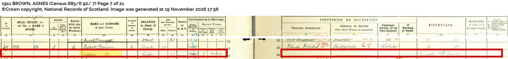

1911 census: Agnes Brown, Gorgie, Edinburgh
Census of Scotland, 1911, Gorgie, Edinburgh (685/6 92 p. 7). National Records of Scotland.

The entry is boxed in red and the names are highlighted. See the full page.

What this document is
A census of Scotland. On census night a form was left at every home, and an enumerator copied each household into his book: names, ages, jobs and birthplaces.
What it says
- Agnes Brown, wife of Robert Brown, French polisher.
Why it was checked
Checked while looking for Laurence's mother in 1911. This Agnes was already married; Laurence's mother was a spinster when she married in August 1911. Not her.
Crown copyright, National Records of Scotland. Image from ScotlandsPeople.